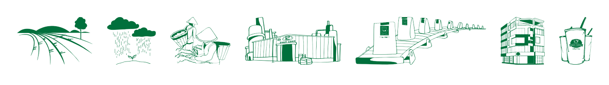

TRANG CHỦ / GIỚI THIỆU
GIỚI THIỆU
Về chúng tôi
Năm 1968, tại cao nguyên chè danh tiếng Bảo Lộc (Lâm Đồng), ABC được ra đời với kỳ vọng mang đến những sản phẩm trà và cà phê chất lượng. Vào những năm 80, ABC khai trương ba cửa hàng đầu tiên tại Thành phố Hồ Chí Minh trên đường Lê Văn Sỹ, Trần Hưng Đạo và Mạc Thị Bưởi nhằm giới thiệu sản phẩm trà và cà phê thuần Việt đến với khách hàng trong nước cũng như quốc tế. Đặc biệt, cửa hàng ABC Mạc Thị Bưởi toạ lạc tại trung tâm Quận 1 là cửa hàng đầu tiên phục vụ các thức uống Trà pha chế đặc trưng của ABC và Cà-phê pha máy cao cấp thường chỉ được phục vụ tại các nhà hàng sang trọng vào giai đoạn đó. Năm 2000, công ty TNHH Sản Xuất Thương Mại ABC chính thức được thành lập. Năm 2007, ABC sở hữu đồi chè tại Thái Nguyên. Bởi chính bản thân tôi nhận thấy Trà Thái Nguyên cạnh tranh được về hương vị, hình thức và chất nước đặc trưng nhưng cũng giống như các loại trà ở các địa phương khác, việc kiểm soát các thành phần dư lượng theo tiêu chuẩn vệ sinh an toàn thực phẩm của thế giới thì trà Thái Nguyên vẫn chịu chung số phận “chưa phù hợp tiêu chuẩn”. Xác định rõ mục tiêu cần duy trì và bảo vệ chất lượng tự nhiên vốn có của trà Thái Nguyên, chính vì vậy tôi nhanh chóng quyết định đầu tư xây dựng nhà máy chế biến trà ngay tại Thái Nguyên. ABC mong muốn qua việc đặt nhà máy ngay tại vùng nguyên liệu, chúng tôi có thể duy trì được cái “chất” của trà Thái một cách trọn vẹn đồng thời hạn chế tối đa các điều kiện nuôi trồng, thu hoạch và chế biến trà nhằm đảm bảo tốt nhất các vấn đề quản lý chất lượng tổng thể. Đồng thời trong năm 2007, ABC đầu tư nhà máy chế biến trà và cà phê tại Bình Dương được trang bị nhiều thiết bị và máy móc hiện đại, có chứng nhận HACCP- quy trình đảm bảo đủ tiêu chuẩn an toàn vệ sinh thực phẩm, với mục tiêu đảm bảo cung ứng nguồn sản phẩm chất lượng, phục vụ thị trường trong nước và đáp ứng nhu cầu xuất khẩu. Cũng từ đây, Trà ABC đã đáp ứng đầy đủ tiêu chuẩn để có mặt tại các thị trường khó tính như: Mỹ, Nhật Bản, Indonesia, Philippines… Năm 2012, cửa hàng Phúc Long Coffee & Tea tại TTTM Crescent Mall Quận 7 ra mắt đánh dấu việc Phúc Long chính thức mở rộng vào ngành đồ ăn & thức uống (Food & Beverage) với cửa hàng Phúc Long hoạt động theo mô hình tự phục vụ trong không gian hiện đại. Cùng với đội ngũ cộng sự đắc lực của mình, chúng tôi làm nên sự kiện đánh dấu bước chuyển mình trong lịch sự phát triển của Phúc Long. Năm 2015, ABC xây dựng được 10 cửa hàng tại Thành Phố Hồ Chí Minh. Từng bước định vị thương hiệu gắn liền với những sản phẩm và thức uống trà và cà phê đậm vị trong tâm trí khách hàng. Năm 2018, xây dựng nhà máy thứ 2 tại Bình Dương, sở hữu hai đồi chè Thái Nguyên và Bảo Lộc. Đồng thời hơn 40 cửa hàng ABC được xây dựng tại: Thành phố Hồ Chí Minh, Bình Dương, Nha Trang, Đà Nẵng, Hà Nội. Năm 2018 cũng là năm tôi quyết định mở rộng thương hiệu ra phía Bắc, sau thời gian tìm hiểu và khảo sát thị trường với cửa hàng đầu tiên của ABC đặt tại Hà Nội. Năm 2019, phát triển 70 cửa hàng và tiếp tục định hướng phát triển mở rộng hệ thống cửa hàng trải dài từ Nam ra Bắc. Bên cạnh đó, tăng độ phủ của sản phẩm trà và cà phê đến tất cả các hệ thống: siêu thị, cửa hàng tiện lợi, kênh thương mại điện tử…
Trải qua hơn 50 năm chắt chiu tinh hoa từ những búp trà xanh và hạt cà phê thượng hạng cùng mong muốn mang lại cho khách hàng những trải nghiệm giá trị nhất khi thưởng thức, Phúc Long liên tục là thương hiệu tiên phong với nhiều ý tưởng sáng tạo đi đầu trong ngành trà và cà phê. Chúng tôi tin rằng từng sản phẩm trà và cà phê sẽ càng thêm hảo hạng khi được tạo ra từ sự phấn đấu không ngừng cùng niềm đam mê. Và chính kết nối dựa trên niềm tin, sự trung thực và tin yêu góp phần mang đến những nét đẹp trong văn hóa thưởng trà & cà phê ngày càng bay cao và vươn xa. Tiếp nối nỗ lực, từ một cửa hàng đầu tiên, đến nay, Phúc Long xây dựng hơn 80 cửa hàng trên khu vực TP.HCM, Bình Dương, Biên Hòa, Cần Thơ, Đà Nẵng, Nha Trang, Hà Nội phục vụ những thức uống tươi ngon từ trà và cà phê. Không dừng lại tại đó, chúng tôi tiếp tục định hướng phát triển mở rộng hệ thống cửa hàng trải dài từ Nam ra Bắc. Tăng độ phủ của sản phẩm đến tất cả các hệ thống: siêu thị, cửa hàng tiện lợi… Hoạt động với phương châm “Chất lượng khởi nguồn từ đam mê”, cùng nhau, chúng tôi đã và đang viết tiếp câu chuyện của một thương hiệu Việt giàu truyền thống, kết nối tinh túy của nhiều thập niên kinh nghiệm và không ngừng chắt lọc, làm mới mình trong bước chuyển thời gian để trở thành thương hiệu luôn gắn bó với nhiều thế hệ khách hàng.
TẦM NHÌN
- Với khát vọng không ngừng mở rộng thị trường - phát triển bền vững, Phúc Long phấn đấu trở thành công ty chuyên sản xuất và xuất khẩu trà, cà phê có giá trị cao tại Việt Nam.
- Phúc Long mong muốn tạo nên một thương hiệu Việt với đẳng cấp và chất lượng được thể hiện trong từng sản phẩm, qua đó từng bước khẳng định vị thế trên thị trường quốc tế.
SỨ MỆNH
- Trở thành người tiên phong của thời đại với những ý tưởng sáng tạo đi đầu trong ngành trà và cà phê.
- Cùng đưa thương hiệu tỏa sáng, tạo động lực cho nhau, cùng biến ý tưởng thành hiện thực bằng tinh thần gắn kết, tương tác, biết lắng nghe và tôn trọng.
- Để tạo niềm vui và tình cảm cho khách hàng, mỗi chúng ta phải thường xuyên liên tục tỏa sáng. Không được để cho năng lực của bản thân bị ngủ quên, không ngừng thách thức khó khăn, phải luôn luôn tự đổi mới bản thân.
- Tạo ra giá trị cao bằng sự thấu hiểu, đồng cảm và những đề xuất có giá trị thật sự, thỏa mãn sự hài lòng cho khách hàng.
GIÁ TRỊ CỐT LỖI
- Đối với khách hàng: Cam kết cung cấp sản phẩm chất lượng và dịch vụ tốt nhất.
- Đối với nhân viên: Xây dựng môi trường làm việc chuyên nghiệp, năng động, sáng tạo và nhân văn, tạo điều kiện thu nhập cao và cơ hội phát triển công bằng.
- Đối với xã hội: Hài hòa lợi ích doanh nghiệp với lợi ích xã hội, đóng góp tích cực vào các hoạt động hướng về cộng đồng, thể hiện tinh thần trách nhiệm đối với xã hội.
LĨNH VỰC HOẠT ĐỘNG
- Sản xuất, xuất khẩu, kinh doanh các sản phẩm trà và cà phê thành phẩm (đóng gói)
- Kinh doanh dịch vụ ăn uống tại hệ thống cửa hàng:
Các loại thức ăn, thức uống
Các loại bánh ngọt, bánh mặn
Dịch vụ giao hàng tận nơi